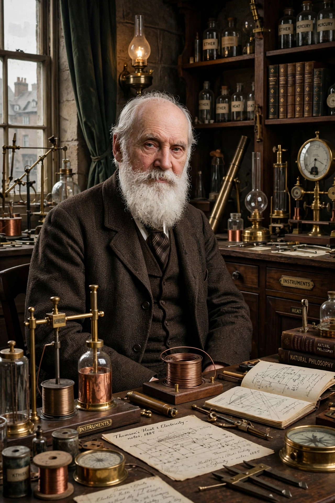

William Thomson, 1st Baron Kelvin (26 June 1824 – 17 December 1907) was a British mathematician, physicist and engineer born in Belfast, professor at the University of Glasgow for 53 years.

William Thomson, Lord KelvinKelvin formulated the first and second laws of thermodynamics in modern form, proposed the absolute temperature scale whose unit, the kelvin, bears his name, and calculated absolute zero. He did fundamental work on electricity, telegraphy — enabling the transatlantic cable — marine compasses, and the age of the Earth (his cooling estimate, later superseded by radioactivity, gave tens of millions of years).
Knighted in 1866, raised to the peerage as Baron Kelvin in 1892 (after the River Kelvin in Glasgow), president of the Royal Society, and buried in Westminster Abbey beside Newton. See Kelvin, Thermodynamics.